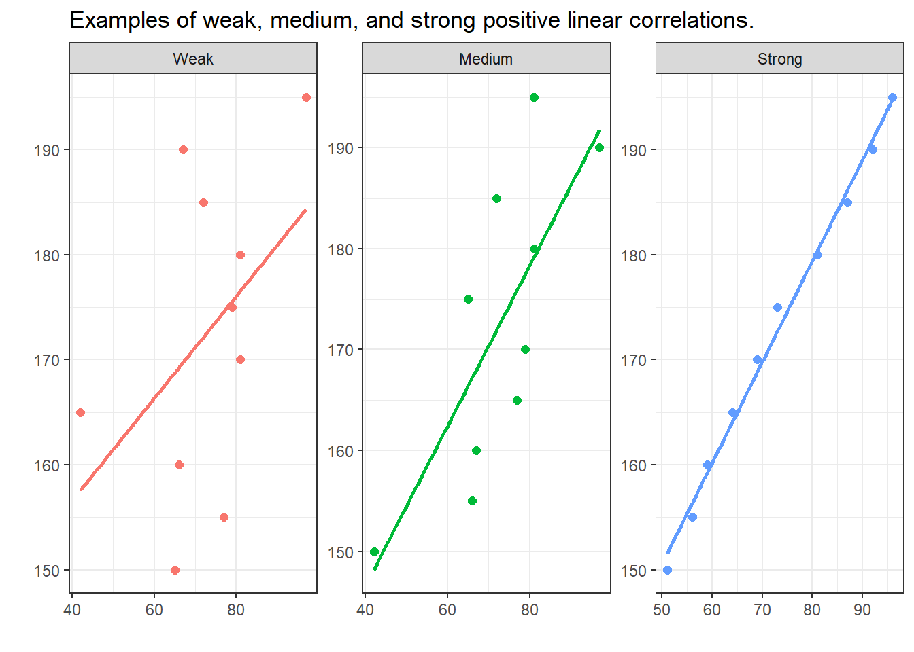
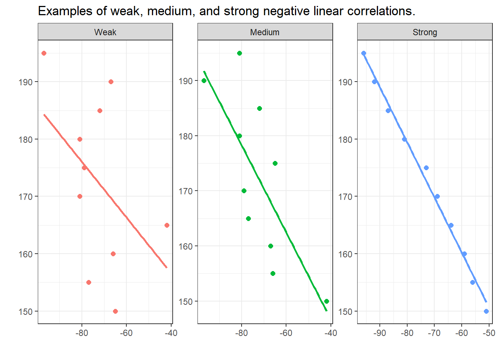

Week 2 Hypotheses and Variables
Perhaps the most trivial and important issues related to the processing and analysis of data are the questions What is statistics? and Why should I use statistics?. A simple answer to the first question is that statistics is a way to find out about the world around us in quantitative terms. Statistics therefore comprises methods that perform quantitative analyses. Quantitative analyses use numeric information to understand the world and they are very important in science (which I take here to refer to any approach that uses the scientific method to gain a reliable understanding of the world around us). The answer to the second question is more complicated but we can say that we use statistics for three main purposes:
- to summarize data (descriptive statistics)
- to explore data, and (exploratory statistics)
- to see how something is related or influenced by something else. (inference statistics)
I also have a very practical approach to statistics and like to think of statistics as a kind of labor-saving device which helps me minimize labor - either the effort associated with reporting a result or in the effort of finding out about how two or more things are related based on some form of data. As such, statistics comprises methods (quantitative analyses) that we use in science to understand the world around us. Science can be defined as a systematic enterprise that builds and organizes knowledge in the form of testable explanations and predictions about the universe (Wilson 1999, 58). One of the most fundamental concepts in that definition is the concept of testable explanations. Another name for such explanations is hypothesis. Thus, Edward Wilson’s definition of science can be rephrased (somewhat crudely) as the methodological testing of hypotheses. This goes to show that hypotheses are at the very heart of the scientific endeavor.
To get a better understanding of how we do science, this tutorial introduces basic concepts that underpin (all) quantitative analyses. To this end, we will try to understand what hypotheses are, how to formulate them, and what logic underpins hypothesis testing. To begin with, we will focus on a practical example to avoid talking merely about abstract ideas. The example we will look at is the English comparative construction.
2.1 Hypotheses
Probably the most important task in empirical research is hypothesis testing. A proper scientific hypothesis is commonly - but not necessarily - a general assumption in the form of a statement. Hypotheses are tested by comparing systematic observation with the predictions of the hypothesis. More specifically, in order to test hypothesis one seeks for observations which contradict and are at odds with the hypothesis. If we find such a counter example and we have determined that it is an accurate observation, then the hypothesis is falsified, i.e. is is not correct.
If we proposed the hypothesis Apples always fall down. and we find an example of an apple not falling down, then our hypothesis would be falsified.
EXERCISE TIME!
`
- Can you think of cases where apples do not fall down?
Answer
For example in space when there is no gravity or if another center of gravity were so close that it would pull the apple towards that more powerful center of gravity.- How would we have to modify our hypothesis to accommodate potential counter-examples?
Answer
Instead of saying Apples always fall down., you could say Apples always fall towards the dominant center of gravity.`
The fact that hypothesis must be falsifiable is a defining feature of hypotheses and it means that for a statement to be a hypothesis, it must be falsifiable (which does not mean that it must be false!).
The for trying to falsifying rather than proving or validating hypothesis, lies in the act that falsification is possible while providing proof for an empirical fact is impossible: If we make only one observation which refutes a hypothesis, the hypothesis is falsified. No matter how many evidence we have for that hypothesis, the hypothesis remains falsified. It is therefore impossible to prove an empirical hypothesis! There are, however, statements that cannot be disproved or falsified - either for technical reasons (1) or because they are subjective (2).
There are forms of life in the Andromeda galaxy.
I like chocolate ice cream better than vanilla ice cream.
Statements that cannot be falsified are called speculation. Speculation is nothing bad or something worthless - on the contrary! - but they simply fall outside of the realm of empirical science. Examples for the creativity and the usefulness of speculation are, for instance, art, literature, music, and philosophy.
Summing up, hypotheses can be defined as possessing at least four criteria:
Hypotheses are falsifiable statements about empirical reality.
Hypotheses are testable statements about the empirical world.
Hypotheses are unambiguous.
Hypotheses are inherently consistent.
Universality cannot be considered a defining feature of hypotheses, because it is - strictly speaking - not necessary. For instance, we could formulate the hypothesis that a certain archaeological model is correct, if we find certain artifacts at a specific place in a certain layer of earth. This hypothesis relates to a a very specific singular event but it would still be a falsifiable and testable statement (and thus a hypothesis).
EXERCISE TIME!
`
- Which of the following are hypotheses? Please provide reasons.
a. Smoking could have negative effects on one’s health.
b. Alcohol is a gateway drug.
c. If alcohol is a gateway drug, then it should be criminalized.
d. If alcohol is a gateway drug but tobacco is not, then a significantly higher proportion of drug addicts have consumed alcohol compared with the proportion of drug addicts who have smoked before taking drugs.
e. Alcohol is a gateway drug, when/if it is illegal.
f. Colorless green ideas sleep furiously.
g. Nightingales dream in Italian.
Answer
- no hypothesis (ambiguous because it contains a modal: could)
b. hypothesis (all criteria are met)
c. hypothesis (all criteria are met)
d. hypothesis (all criteria are met)
e. hypothesis (all criteria are met)
f. no hypothesis (not inherently consistent)
g. no hypothesis (not testable).
`
Types of Hypotheses
On a very fundamental level, we can differentiate between null-hypotheses (H\(_{0}\)), that claim non-existence of either a state of being or a difference, and alternative or test-hypothesis (H\(_{1}\)) that claim or postulate the existence of of either a state of being or a difference. Among test-hypotheses, we can furthermore distinguish between non-directed hypotheses which claim that one sample is different from another sample, and directed hypotheses which claim that a feature of one sample is bigger, smaller, more frequent, or less frequent, etc. Thus, a hypothesis that group A will perform better in an exam is a directed test-hypothesis while an non-directed hypothesis would merely claim that they differ in their test results. In contrast, the null-hypothesis would claim that there is no difference between the groups in terms of their performance in that exam.
An additional distinction among hypotheses is the difference between deterministic and probabilistic hypotheses. While we are dealing with a deterministic hypotheses in (10) because it is a categorical claim, we are dealing with a probabilistic hypothesis in (11) because, here, the hypothesis simply claims that the likelihood of Y is higher if X is the case (but not necessarily categorically).
If the length of two words in an English phrase is different, then the shorter word will always proceed the longer word.
If the length of two words in an English phrase is different, then it is more likely for the shorter word to proceed the longer word than vice versa.
Why test the H0?!
Although it is counter-intuitive, we do not actually test the test-hypothesis but we test the null-hypothesis. We will now have a closer look at how to formulate hypotheses and that formulating hypotheses is formulating expected outcomes/explanations in a formal description.
Null hypothesis (H0) Groups A and B do not differ systematically! (\(\mu\)A = \(\mu\)B)
Test hypothesis (H\(_{1a}\)) Groups A and B differ systematically! (\(\mu\)A \(\neq\) \(\mu\)B; non-directed)
Test hypothesis (H\(_{1b}\)) Group A has significantly better results/higher levels of x compared with group B. (\(\mu\)A \(>\) \(\mu\)B; directed)
What does that mean and what are we testing? In non-technical terms, we test how likely it is that the results came about by accident. If the probability is high (p > .05) that the results happen to be random, then we do not discard the H0. If the likelihood is low (p < .05) that the results came about randomly, then we discard the H0 and assume the H1 instead! To better understand this logic, we will discuss probabilities and their role in quantitative research.
EXERCISE TIME!
`
- What four characteristics do hypotheses have?
Answer
They are are falsifiable (either true or false), they are testable, they are unambiguous, and they are inherently consistent (logically coherent).- Come up with (a) three directed hypotheses and (b) three non-directed hypotheses.
Answer (examples)
Directed
In a 100 meter dash, Martin runs faster than Jack.
In informal conversations, Martin uses fewer swearwords than Michael.
Per minute, Martin can produce more words than Erich.
Non-directed
Martin and Michael differ in their use of swear words.
Martin and Erich differ in their speech speed.
Stefan and Martin differ in their need for sleep.
Oftentimes, it is not that easy to differentiate between hypotheses and other types of statements. Find a partner and come with statements that are not hypotheses and discuss why these statements are not hypotheses.
Find a partner and come up with statements that can be classified as both hypotheses and non-hypotheses and be prepared to explain your reasoning to the group.
`
2.2 Data and Research Designs
In the previous section, we have dealt with hypotheses and in this section, we want to focus on how we can test hypotheses. To this end, we will focus on data and different research designs.
Before we turn to different designs that are used to test hypotheses, however, let us briefly talk about the terms sample and population as this will be important to our discussion of how we can test hypotheses. A sample is a selection from a population that should reflect the features of the population one is interested in. We speak of a population instead of the population, because there are many different populations and we need to be very conscious about what population we are able to infer something about. For example, if the sample includes only Germans between 20 and 30, then the population the sample is drawn from is not the totality of all Germans, but only the population of Germans between 20 and 30 at this point in time. Of course, this is very simplistic, as other factors are ignored in this example.
Research Designs
Now that the terms sample and population are clear, we can continue to think about how we could test hypotheses. In the empirical sciences, we try to answer questions we have by analyzing data. However, before we can attempt to answer a question and test if we are right with the answer we have in mind (our hypothesis), we have to decide on how to tackle the question. Thus, we have to come up with a plan about how to test our hypothesis. This plan is called a research design. The research design informs how to collect the data.
Research design vs data analysis
In contrast, data analysis focuses on how the data are analyzed, for instance if we want to take a qualitative or quantitative approach to analyzing the data. The analytic approach can, and often does, impact the choice and realization of the research design. As such, research design and data analysis are separate steps. This is why it does not make sense to speak of a qualitative or a quantitative research design. Rather, we can use any type of research design and then use a qualitative and/or a quantitative approach to analyze it. However, data collected using certain research designs, for example experimentation, are predominantly analyzed using quantitative rather than qualitative analyses - in contrast, data collected via interviews are more commonly (but certainly not exclusively, analyzed using a qualitative approach.
Types of research designs
After coming up with a research question and a hypothesis, the next step typically consists in collecting the right type of data. There are different ways to collecting data and these different ways to collect data represent different research designs. We cannot go over all the different designs (and they can be combined, for instance, introspection is often a part of questionnaire designs), but we will focus and briefly discuss the most common ones.
In general, we can distinguish between experimental and observational designs. In contrast to observational designs (which can only confirm correlations, i.e. that X and Y occur together), experimental designs are more powerful in that they can determine causality (i.e., if X causes Y). We the most common research designs in the language sciences are
- experimental
- experimental designs (e.g., reaction times, eye-tracking)
- observational
- behavioral designs (e.g., corpora)
- archival/reviews (e.g., grammars, systematic literature reviews)
- introspection (e.g., grammaticality judgements)
- questionnaire designs (e.g., elicitation via surveys and questionnaires)
There are more designs(e.g. meta-studies) and also other classifications, but in the language sciences, I think that the ones listed above are the most frequent ones. Each of these designs has advantages and disadvantages which are briefly summarized in the table below.
Type | Research design | Example | Directness of access to phenomenon | Cost/Labor intensity | External validity (generalizability) | Internal validity | Ease of data collection (e.g. access to participants) |
Experimental research | Experimental | Reaction time measurements | high | high/variable | high | high | low |
Observational research | Behavioral | Corpus study | high | low/variable | low/variable | high | medium |
Archival/Review | Systematic literature review | low | low | low | medium | high | |
Introspection | Grammaticality judgements | high | low | low/variable | high | low | |
Questionnaire | Language use survey | medium | low | medium | medium | high |
We will now briefly focus on each design and discuss it.
Experimental research
Experimental designs can determine if there is a causal link between predictors and response which sets experimental designs apart from observational designs. Experiments typically take place in very well-controlled, but unnatural environments, .e.g, in laboratories.
In experimental designs, subjects are typically randomly assigned into test groups and control groups and the experimenter. If the subjects are not assigned randomly to test and control groups, the design is referred to as quasi-experimental (while experimental designs with randomized allocation of subjects are referred to as true experiments). The aim of experiments, in the most basic sense, is to determine if a result differs based on a change in some condition. The experimenter would change the condition only in the test group while not changing it in the control group while everything else remains constant. That way, it is possible to test if the change in the condition is responsible for the change in the outcome.
During an experiment, subjects are shown stimuli (e.g., sentences, words, pictures) and the subjects (should) react to those stimuli showing a response (pressing buttons, providing judgments). The response does not have to be voluntary, meaning that responses can also simply be neuronal activity that the subject has no control over. In repeated measure designs, the same subjects are tested repeatedly while different subjects are tested in between-subjects designs.
In addition to the ability to establish causality, experimental designs allow a very direct access to a phenomenon and have high internal validity which means that experiments can test the phenomena in a very well-circumscribed and precise manner. Disadvantages of experimental designs are that they are typically rather costly and labor intensive and that the results are not necessarily generalizable due to the un-natural setting of most experiments (low external validity).
Quasi-experimental research
In contract to experimental designs, subjects (or participants) in quasi-experimental designs are not randomly assigned to groups. Because of this, quasi-experimental designs can be affected by confounding (i.e., that changes in the dependent variable are caused by a variable that is not controlled for). As such, quasi-experimental designs are not experimental designs but can be considered observational. Examples for quasi-experimental designs are corpus-based variationist studies of the occurrence of linguistics variants in a variable context.
Quasi-experimental designs encompass studies where subjects cannot be randomly assigned into test groups because either, this is not practically possible because the observation has already taken place or because the characteristic is inherent in the participants themselves. For instance, analyses of historical data can at best be quasi-experimental because the data have already been collected and the experimenter cannot assign participants to test groups. Also, some studies that analyze sex differences via the behavior of men and women cannot be experimental because participants cannot be randomly assigned to the male or female group.
Observational designs
In the language sciences, observational designs encompass all forms of data acquisition and collection where the subjects are observed in their “natural habitat”. Hence, observational or behavioral designs are the most natural and thus have high external validity which means that we can assume that the results are transferable to the real world. The most common type of this design are corpus studies in which texts (which encompasses both written and transcribed spoken language) are searched for the occurrence of certain linguistic patterns and then correlated with some other feature, the use of a certain linguistic construction such as a specific suffix or a fixed expression like in order that in two different time periods or dialects.
The cost and labor intensity of corpus studies depends heavily upon if the corpus that you want to use has already been compiled - if the corpus is already available, the the costs and labor intensity are minimal but they can be high if the corpus has to be compiled first. However, even compiling a corpus can be comparatively easy and cheap, for example, if you compile a corpus consisting of a collection of texts that are available online but the costs can be substantive if you, for example, first need to record and transcribe spoken language in the field).
The problem with observational designs are that the contexts in which the data were collected were not controlled with means that the results are more likely to be affected by contextual or confounding factors that the researchers have no control over or don’t even know about.
Archival research and reviews
Archival research is more common in historical linguistics where researchers look for primary texts or records in archives. However, archival research also encompasses digital archives such as libraries which means that systematic literature reviews also fall under this research design.
The advantages of archival research designs are that the data collections is typically comparatively easy and associated with minimal costs. Also, depending on the phenomenon, the access to the phenomenon can be quite indirect, for example, entirely filtered through the eyes of eye witnesses or experts.
Introspection
Introspection has been the dominant form of “data collection” in the 20^th century and it is strongly connected to what is called armchair linguistics (linguists coming to insights about language by musing about what they can or would say and what they could or would not say). Introspection is, of course, by far the easiest and cheapest way to “collect data”. Unfortunately, introspection is subjective and can be heavily biased by the expectations and theoretical framework of subjects. Nonetheless, introspection can be and is extremely useful in particular regarding hypothesis generation and finding potential predictors for a certain linguistic behavior that can then be tested empirically.
Since the 1990s and the rise of empirical linguistics, which is characterized by the employment of both experimental designs as well as corpus linguistics and increased use of questionnaire designs, introspection has been relegated to playing a part of other designs while only rarely being used as the sole source of data collection.
Questionnaire designs
Questionnaire designs represent any method of data collection where respondents are asked to provide (conscious) information to answers or ratings/evaluations to prompts (such as statements). The process to ask for information from respondents is called elicitation.
In addition to surveys which ask for socio-demographic information about speakers or about language use and language background information, questionnaires frequently ask respondents to rate their agreement with items, or the likelihood, frequency, or acceptability of items on Likert scales. A Likert scale, pronounced /lick.ert/ and named after the psychologist Rensis Likert, and often ranges from strongly disagree to strongly agree (or analogously from never to very frequently or extremely unlikely to extremely likely). Typically, respondents are given 5 or 7 options with the endpoints noted above representing the endpoints and respondents are asked to select the options that best matches their evaluation.
A type of elicitation that is special in the language science is called discourse completion task or DCT. In DCTs, respondents are asked to imagine a certain discourse context or situation and are then asked how they would answer, respond, or express something. While DCTs have been shown to provide data that mirrors real-world behaviors, it is less reliable compared to corpus data as respondents cannot necessarily provide accurate information about their linguistic behavior.
To counter fatigue effects (respondents get tired or annoyed and do no longer answer to the best of their knowledge/ability), questionnaire items are often randomized so that their order differs between respondents. To counter what is called agreeability effects, researchers commonly have respondents rate test items (items that contain the phenomenon researchers are interested in) and fillers (items that do not contain what researchers are interested in). Fillers are included to disguise what the questionnaire aim to test so that respondents cannot (unconsciously) try to provide agreeable answers (the answers that researchers hope to get).
2.3 Variables and Validity
A statistical variable is a characteristic that can take on a specific form. A variable, in contrast to the constant, can take on at least two different stages or levels. The variables in your hypothesis must be operationalized, i.e., you need to determine what exactly needs to be investigated, what counts, what is measured. In other words, operationalization is the measurement of a variable. If possible, a variable should be operationalized so that its measurement is as good as possible reflects the underlying concept.
The correspondence between the concept and the variable that operationalizes the concept is referred to as intrinsic validity. An example of intrinsic validity would be, for example, an operationalization of linguistic complexity that reproduces them well measurable (for example, number of morphemes in a phrase, number of syntactic nodes, or similar).
The counterpart, external validity, denotes the applicability of the insights gained, for example, from an experimental investigation to the real empirical world. For instance, one could experimentally investigate which methods lead to better recall of nonsense-syllables (syllables not occurring in the speakers’ natural L1) but this would not necessarily allow us to generalize these finding to the “real” world. External validity in this context would mean that the findings can also be transferred to other real-world memory tasks, such as vocabulary learning.
There are two types of variables, dependent and independent. The independent variable(s) represents the predictor(s). In research, we typically want to investigate how predictors (independent variables) affect and outcome or result (the dependent variable). In experiments, the independent variable(s) are manipulated to investigate its influence on the dependent variable. Let us take the example of a medical study to illustrate this: in a typical medical study, the influence of a particular drug (independent variable) on the presence of symptoms (dependent variable) is measured.
It is extremely important to know the type of variable, as this has a direct impact on what statistical analysis is possible for the data at hand. We will therefore discuss various types of variables and their properties below.
Variable Types (Scaling)
In the following, variable types (also referred to as scaling level or scaling) are discussed. It is very important to know which type of variables one is dealing with because the type of variable has affects many of the methods discussed, both in descriptive and in inferential statistics.
Nominal and Categorical Variables
Nominal and categorical variables only list the membership of a particular class. For nominal variables, there are exactly two occurrences (yes/no or on/off), while for categorical variables there can be several groups, e.g. the state in which someone was born.
Ordinal Variables
With ordinal variables it is possible to rank the values, but the distances between the ranks can not be exactly quantified. An example of an ordinal variable is the ranking in a 100-meter dash. The 2nd in a 100-meter dash did not go twice as fast as the 4th. It is often the case that ordinal variables consist of integer, positive numbers (1, 2, 3, 4, etc.).
(True) Numeric Variables
There are two basic types of numeric variables: interval-scaled variables and ratio-scaled variables. For interval scaled variables, the differences between levels are significant, but not the relationship between levels. For instance, 20 degree Celsius is not twice as hot as 10 degree Celsius.
With respect to ratio-scaled variables, both the differences and the relationship between the levels are significant. An example of this is the times in a 100-meter dash. For ratio-scaled variables, 10 is exactly twice as high as 5 and half as much as 20.
A subtype of ratio-scaled variables are so-called integers. Integers are always positive and never negative and they are related to counts (which represent frequencies of occurrences). This is important to mention here as we need to use different models when dealing with counts compared to other ratio-scaled variables. Counts are analyzed by models which are based on the Poisson or negative binomial distribution whereas true ratio-scaled variables are modeled based on the Gaussian or normal distribution.
It is very important to keep in mind that both interval-scaled variables and ratio-scaled variables are numeric variables. This will play a role later because many tests can either only or never be applied to numeric variables.
Variable Type | Variable Level |
Nominal Scaled / Categorical Variables | Gender, Nationality, Part of Speech |
Ordinal Scaled Variables | Graduation, School Grades, Military Rank |
Interval Scaled Variables | Temperature, Acceptability Judgments |
Ratio-scaled Variables | Age, Duration, Number of Syllables |
Variables reflecting counts | Errors in 1000 word essays |
It is enormously important to know variable types and levels, as the type of variable requires which tests are possible and which are not. For example, a \(\chi\)2-test can only be applied to nominal or categorical variables, and a t-test to numeric variables only.
It is often necessary to translate variables into another type of variable. It should be noted that variables can only be transferred to variable types with less information content. The least informative variables are nominal, while the most informative variables are ratio scaled. The variable types thus form an implicit hierarchy:
nominal/categorical < ordinal < interval/ratio
Here is an example to illustrate this: let’s say you are investigating gender differences in the use of swear words in spoken Irish English and you find that you cannot use a linear regression or an ANOVA because too many speakers use no swear words (which violates the requirement that the errors must be normally distributed). In such a case, what one can do is to rank the speakers by their frequency of swear or curse words. Rank 1 would represent the speaker with the highest frequency of swear words, rank 2 would represent the speaker with the second highest frequency of swear words and so on. After you do this, you can, for example, use a Mann-Whitney U test to determine the relationship between the gender of speakers and their swear word ranking. You could also split the speakers into two groups (swear word users and non-swear-word users) and then perform a \(\chi\)2-test of the frequencies of men and women in these groups. The important thing is that you cannot transform a categorical variable into a numeric variable as this would mean that you transform a less information-rich variable into a more information-rich variable.
EXERCISE TIME!
`
- For each of the variables listed below, consider how you could operationalize them and what kind of variables it would be.
a. weather (cloudy, sunny, rainy, etc.)
b. citizenship
c. Tense of matrix verbs
d. Structural complexity
e. word length
f. Number of syllables in a word
g. The length of pauses in a sample of conversations
h. The appearance or non-appearance of finite verbs in a particular text
i. Estimation of words on an acceptability scale from 1 to 5
Answer (examples)
There are other solutions so the following are just possible options!
a. weather could, e.g., be operationalized as the number of sunny days or the amount of rain per year. Optimally, we would want weather to be operationalized as a numeric variable.
b).citizenship would typically be operationalized as a categorical variable (e.g. German or Norwegian or Australian or other).
c. This answer depends on the grammatical structure of the language in question. In English, we would probably operationalize the tense of matrix verbs as a nominal variable with the levels present and non-present.
d. Structural complexity can be operationalized in many different ways, e.g., as the number of syntactic nodes, sentence length, number of phrases, average phrase length, etc. Optimally, we would want structural complexity to be operationalized as a numeric variable.
e. Word length could,e.g. be operationalized as number of letters, number of phonemes, or the time it takes to produce that word. Thus, word length would typically be operationalized as a numerically scaled variable or an integer (which, in R, would be a type of numeric variable).
f. The number of syllables per word would be operationalized as an integer (which, in R, would be a type of numeric variable).
g. The length of pauses in a sample of conversations could be operationalized as the time of the pause (numeric) or even just as an ordered factor (short, middle, long). Optimally, however, we would want the length of pauses to be operationalized as a numeric variable.
h. The appearance or non-appearance of finite verbs in a particular text would be a nominal variable (present versus absent).
i. (The estimation of words on an acceptability scale from 1 to 5 represents judgements on a Likert scale which means that the resulting variable would represent an order factor (ordinal variable).
As you have seen from the above exercise, concepts can be operationalized differently. Find a partner and imagine that you are tasked with performing a study in which age of subjects is an important variable. Discuss with a partner how you would age. What advantages and disadvantages do the different operationalizations have?
Example: When it rains, more people get wet than when it’s not raining. (If X, then Y)
What is the dependent variable here and what is the independent variable?
Answer
Dependent variable: wet people
Independent variable: rain
- Which variable scales are time, rank, and name in the table below?
Name | Rank | Time |
Carl Lewis | 1 | 9.86 |
Ben Johnson | 2 | 9.97 |
Steve Davis | 3 | 10.06 |
Answer
Name is categorical, Rank is ordinal, and Time is numeric.
Discuss with a partner: what obstacles might exist, so that a well operationalized variable has low extrinsic validity?
Consider the following scenario: in a large representative study, shoe size is found to be an excellent predictor of intelligence. Given this result, find a partner and discuss if intrinsic validity is necessary?
`
2.4 Relationships between variables
Most research aims to understand how something (or many things) influence something else. This means that research is interested in the relationships between variables. In statistics, a relationship between variables is commonly referred to as correlation. There are different types of relationships (correlations) and they can be classified along several dimensions:
strength: how strong is the relationship between the variables?
direction: is the relationship positive or negative?
linearity: is the relationship steady?
homogeneity: is the relationship consistent?
The visualizations below show linear positive correlations of varying strength. The strength of a correlation (relationship) represents how well one variable explains variability in the other variable: the better a variable explains the variability of another variable, the stronger the correlation between the two variables. In the visualizations below, we can see that the variability or dispersion in substantively more pronounced in the plot showing a weak correlation (indicated by the distances between the data points and the regression line) compared to the visualization that depicts a strong correlation (where the data points are very close to the regression line).

In contrast to the positive linear correlations depicted above, where the variables have a the higher the values of x, the higher the values of y correspondence, negative correlations have a the higher the values of x, the lower the values of y correspondence. The strength of the correlations is, however, not affected by its direction.
